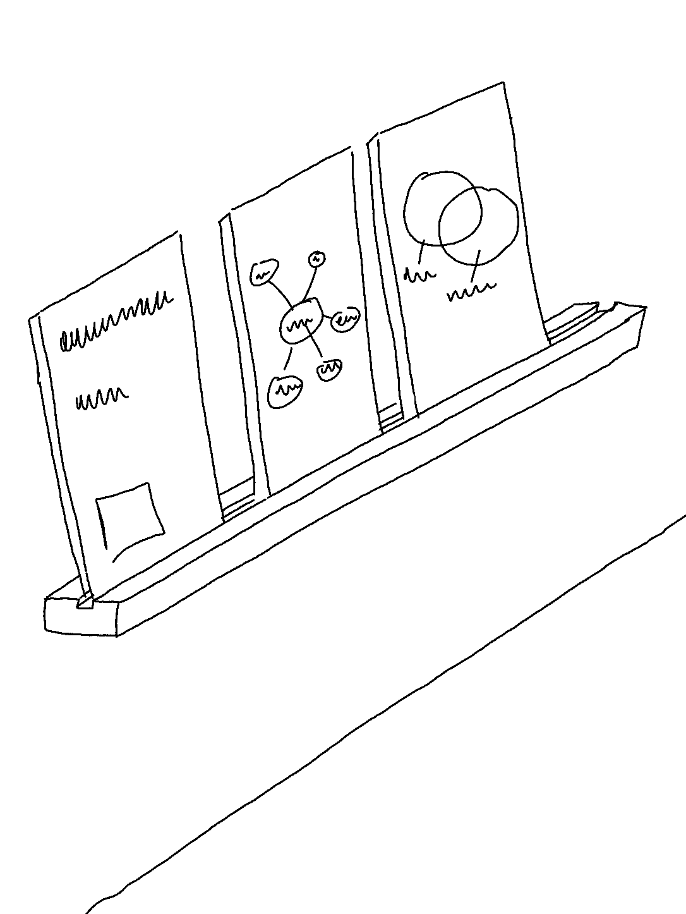
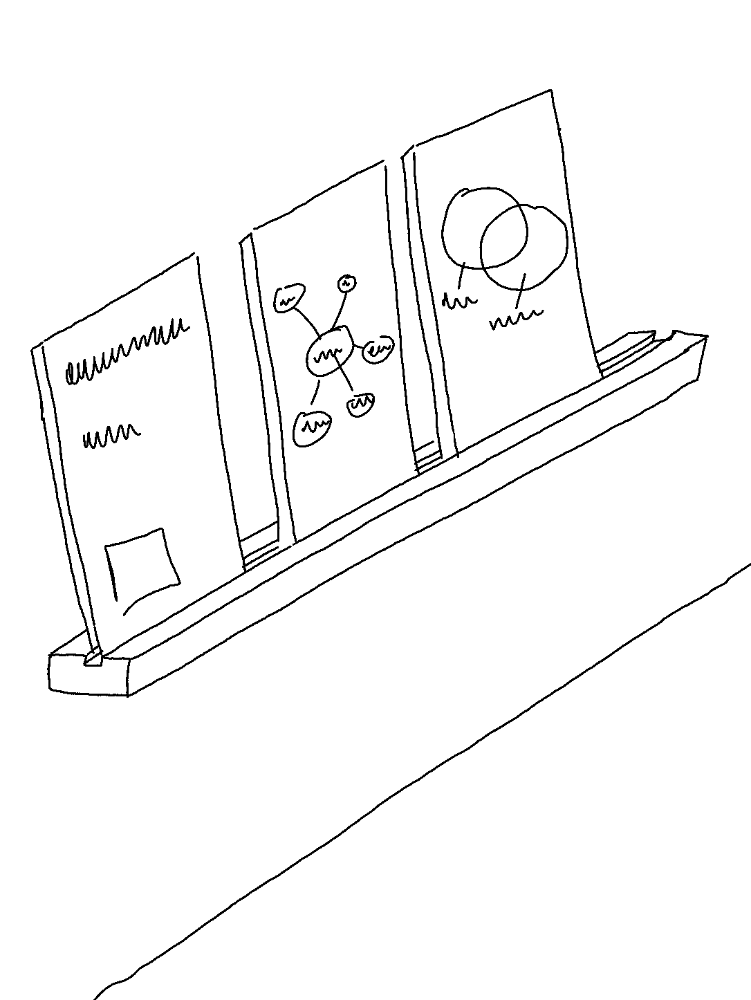

7. november 2022 · home
Studere hardere
 

Jeg var på utkikk etter måter man kan studere bedre på - en måte å huske ting lettere på. En metode som virka interessant, var at når man er ferdig å lese noe nytt, skulle man prøve å skrive ned det man husker. For å gjøre det gøyere, tenkte jeg at å bruke en tavle å skrive på. Jeg kom over en benkeplate fra IKEA på en bruktbutikk som var laget av grønt glass - dette er perfekt! Kjøpte tre stykker, og nå var det bare å finne en måte å henge de opp på.